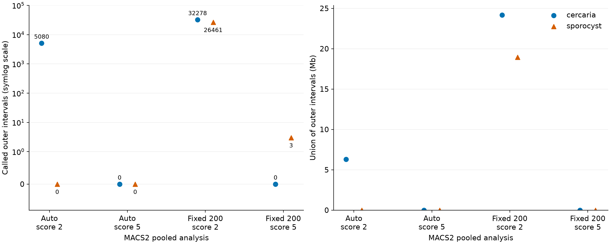
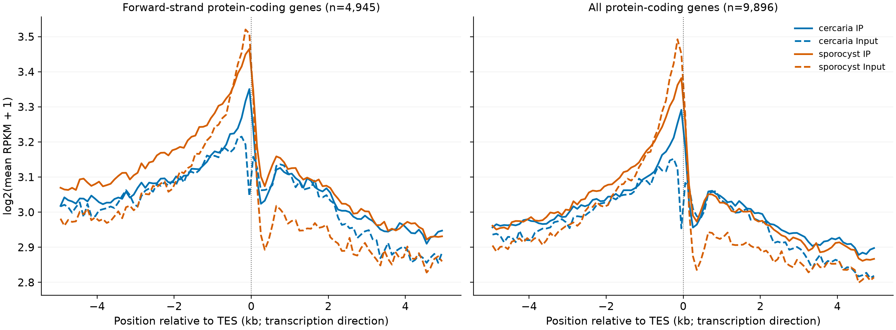
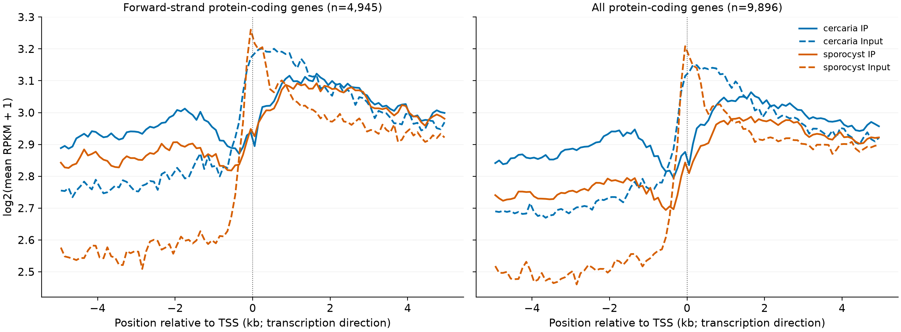

PRJNA1090249 · cercárias SmVEN e esporocistos SmDFO · SM_V10/WBPS19
O caminho principal chamou peaks por biblioteca e reuniu suporte entre bibliotecas. O braço inspirado no artigo partiu dos alinhamentos preservados antes do filtro de MAPQ, excluiu o tag XS, removeu duplicatas por biblioteca com samtools rmdup -s, normalizou a profundidade com Picard e agrupou os três IPs de cada estágio. Cada grupo usou seu Input correspondente uma única vez.
Foram avaliados MACS2 com modelagem automática e, separadamente, extensão fixa de 200 bp. O sinal ppois representa −log10(p) de Poisson. O broad calling usou scores fortes 2 e 5, score de ligação 1, comprimento mínimo 200 bp e gaps máximos de 30/800 bp. Esses scores não equivalem aos q-values do caminho principal.
A profundidade efetivamente realizada foi 3.819.229 reads em cada uma das oito bibliotecas. A biblioteca limitante não permitiu atingir os 4,7 milhões do artigo sem inventar reads. Foram usados MACS2 2.2.9.1 e Picard 3.4.0, com seed 20261018 e estratégia HighAccuracy.
| Grupo | Modelo | Score 2 | Score 5 | Cobertura no score 2 |
|---|---|---|---|---|
| Cercárias | Automático, d=72 bp | 5.080 | 0 | 6.289.399 bp |
| Esporocistos | Automático, d=70 bp | 0 | 0 | 0 bp |
| Cercárias | Extensão fixa, 200 bp | 32.278 | 0 | 24.161.508 bp |
| Esporocistos | Extensão fixa, 200 bp | 26.461 | 3 | 18.943.672 bp |
Os modelos automáticos ajustaram, mas os valores de 70–72 bp continuam próximos ao comprimento modal de 76 bp dos reads. Não são validação experimental de tamanho de fragmento.
Zero regiões não significa zero sinal local. Todos os quatro tracks tinham bases acima do score 5; a maioria não compôs regiões que satisfizessem a geometria adotada. As três regiões de esporocistos no braço fixo/score 5 somam 882 bp. Os parâmetros geométricos históricos exatos não foram recuperados.

| Extensão fixa / score 2 | Reads IP nas regiões | Reads Input nas regiões | Razão das frações | Bases do consenso principal recuperadas |
|---|---|---|---|---|
| Cercárias | 13,22% | 6,91% | 1,92× | 33,31% |
| Esporocistos | 11,32% | 6,19% | 1,83× | 44,24% |
São frações de sobreposição de reads dos BAMs normalizados e deduplicados por biblioteca, antes da limitação adicional de duplicatas pelo MACS2 após agrupamento. A razão não é um teste estatístico nem prova de enriquecimento específico. No braço fixo, a cobertura sobe para dezenas de megabases no corte permissivo, mas a chamada rigorosa quase desaparece.
O Jaccard em bases com os consensos principais foi 0,000835 para cercárias e 0,000505 para esporocistos. Esses valores também refletem a enorme diferença de tamanho entre envelopes amplos agrupados e os pequenos segmentos de suporte do consenso principal; não permitem escolher isoladamente qual método está biologicamente correto.
Foram incluídos 4.945 genes codificadores na fita positiva e, em um painel complementar, todos os 9.896 genes codificadores da anotação atual. Os grupos se sobrepõem. Cobertura RPKM de reads alinhados, sem extensão de fragmentos, bins de cobertura de 50 bp e bins de perfil de 100 bp em ±5 kb. As curvas mostram log2(média aritmética de RPKM + 1). Genes com sinal zero não foram removidos; os pools não fornecem intervalos de confiança entre réplicas biológicas.


Esta é uma adaptação à referência atual, com profundidade menor, três IPs por estágio e escolhas explícitas para parâmetros não detalhados no artigo. O subconjunto histórico exato, as versões originais e a referência SMv9 não foram reproduzidos. ChromstaR diferencial e DiffBind não foram executados.
Todas as métricas da comparação · Valores dos perfis TSS/TES · Resumo do pacote